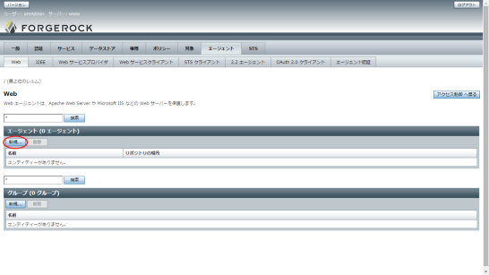
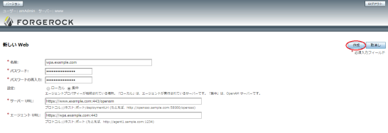
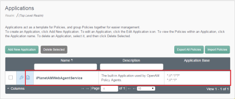
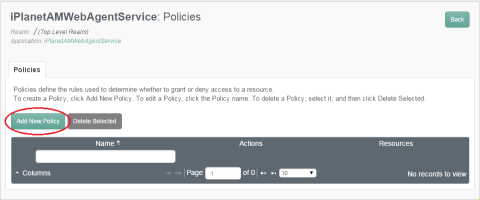
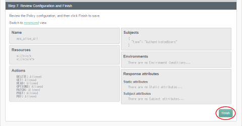
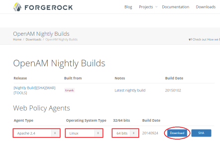
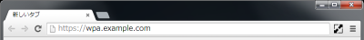
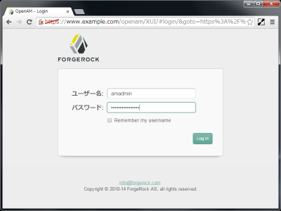
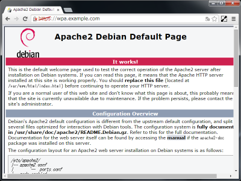

DebianにOpenAM Web Policy Agentをインストールする [非公式手順]
Debian環境のApacheは、設定ファイルが細かく分割されていて、個々のモジュールや サイト (VirtualHost) がコマンドで enable/disable できるようになっている。 この方法、とてもわかりやすく、管理もしやすくて、僕はとても気にっている。
Debian環境に合わせてOpenAMのWeb Policy Agentをインストールしてみたので、 そのときの手順をまとめておく。
インストールする環境の概要
- OpenAM Nightly BuildのWeb Policy Agentを使う。 (この手順では2014/12/16ビルド版を使用)
- OpenAM (https://www.example.com/openam) のエージェントとして動作させる。
- Apache+mod_sslでWebサーバを構成し、そこにWeb Policy Agentをインストールする。
インストールを行なうサーバは、次のような環境であるとする。
- Debian jessie を使う。
- ホスト名は wpa.example.com になっている。
OpenAMの設定
OpenAMにAgent Profileを作る
OpenAMの管理コンソール画面で、 [アクセス制御] → [/ (最上位のレルム)] → [エージェント] → [Web] とたどる。
エージェント一覧の [新規…] をクリックする。
エージェントに関する設定を記入し、[作成] をクリックする。
| 項目 | 説明 |
|---|---|
| 名前 | エージェントに名前をつける。エージェントをインストールする サーバ名にしておくとよい。(wpa.example.com) |
| パスワード | エージェントがOpenAMサーバにアクセスするときのパスワード。 16文字程度のランダム文字列にするとよい。 |
| パスワードの再入力 | パスワードを再入力する。 |
| サーバーURL | OpenAMサーバのURLを入力する。例にあるとおりポート番号を 明示的に入力する必要がある。 (https://www.example.com:443/openam) |
| エージェントURL | エージェントをインストールするサーバのURLを入力する。 OpenAMサーバーからエージェントに設定やポリシーの更新を 通知し、即時に反映するために使われる。 (https://wpa.example.com:443) |
OpenAMのアクセス制御ポリシーを作る
OpenAMのWeb Policy Agentは、デフォルトで iPlanetAMWebAgentService という アプリケーションに設定されたポリシーを使うようになっている。
初期状態はポリシーが空 (アクセス許可が無い) 状態となっているため、認証された ユーザーのアクセスを許可する設定を追加しておく。
OpenAMの管理コンソール画面で、 [アクセス制御] → [/ (最上位のレルム)] → [ポリシー] とたどる。
[iPlanetAMWebAgentService] の行をクリックする。
[Add New Policy] をクリックする。
Stepに沿って入力を進め、最終的に次の設定となるようにする。 [Finish] をクリックすればポリシーが作成される。
| 項目 | 設定値 |
|---|---|
| Name | wpa_allow_all |
| Resources | *://*:*/*
*://*:*/*?*
|
| Actions | DELETE: Allowed
GET: Allowed
HEAD: Allowed
OPTIONS: Allowed
PATCH: Allowed
POST: Allowed
PUT: Allowed
|
| Subjects | {
“type”: “AuthenticatedUsers”
}
|
| Environments | There are no Environment Conditions… |
| Response attributes | Static attributes
There are no Static attributes…
Subject attributes
There are no Subject attributes…
|
OpenJDKのインストール
Web Policy AgentのインストーラがJavaで作られているため、OpenJDKをインストールする。
$ sudo apt install openjdk-7-jre-headless
Apacheのセットアップ
apache2をインストールする。
$ sudo apt install apache2
SSL用のサーバ設定を有効にする。
$ sudo a2enmod ssl
$ sudo a2ensite default-ssl
$ sudo service apache2 restart
Note
サーバ証明書の設定手順はここでは省いています。そのまま動かすと、 apache2のインストール過程で自動生成される自己署名サーバ証明書が使われます。
Web Policy Agentのインストール
Web Policy Agentをダウンロードする
OpenAM Nightly Builds [1] から [Apache 2.4] の [Linux] の [64bits] 用の Web Policy Agentをダウンロードする。
ダウンロードされたファイルが “apache_v24_Linux_64_agent_4.0.0-SNAPSHOT.zip” であることを確認する。
Web Policy Agentを配置する
ダウンロードしたzipファイルを展開する。zipファイルを展開した場所が、 インストール先になるため、先にインストール先のディレクトリを作ってから 展開する。
$ sudo apt install unzip
$ sudo mkdir /opt/openam
$ cd /opt/openam
$ sudo unzip /path/to/apache_v24_Linux_64_agent_4.0.0-SNAPSHOT.zip
$ ls -F
web_agents/
$
パスワードファイルを作成する
インストーラに渡すパスワードのファイルを作成する。 パスワードはAgent Profileを作成した際に入力したものを指定する。
$ umask 0377
$ echo password_for_agent > /tmp/pwd.txt
$ umask 0022
ダミーのhttpd.confファイルを作る
インストーラがhttpd.confファイルがあることをチェックしているので、 ダミーのhttpd.confを作成する。
$ sudo touch /etc/apache2/httpd.conf
Web Policy Agentのインストーラを実行する
インストーラを実行する前に、apacheを止めておく。
$ sudo service apache2 stop
Web Policy Agentのインストーラを実行する。
$ cd /opt/openam/web_agents/apache24_agent/bin
$ sudo ./agentadmin --install
ライセンス条件 (CDDL Version1.0) が表示される。内容を確認して y を 入力する。
Please read the following License Agreement carefully:
COMMON DEVELOPMENT AND DISTRIBUTION LICENSE (CDDL) Version 1.0
...
Do you accept the license? y
Apacheの設定ディレクトリのパスを訊かれるので、/etc/apache2 と入力する。
Enter the complete path to the directory which is used by Apache Server to
store its configuration Files. This directory uniquely identifies the
Apache Server instance that is secured by this Agent.
[ ? : Help, ! : Exit ]
Enter the Apache Server Config Directory Path [/opt/apache24/conf]: /etc/apache2
OpenAMサーバのURLを訊かれるので、https://www.example.com/openam と 入力する。ポート番号はデフォルトポートの場合は省略できる。
Enter the URL where the OpenAM server is running. Please include the
deployment URI also as shown below:
(http://openam.sample.com:58080/openam)
[ ? : Help, < : Back, ! : Exit ]
OpenAM server URL: https://www.example.com/openam
Policy AgentのURLを訊かれるので、https://wpa.example.com と 入力する。ポート番号はデフォルトポートの場合は省略できる。
Enter the Agent URL as shown below: (http://agent1.sample.com:1234)
[ ? : Help, < : Back, ! : Exit ]
Agent URL: https://wpa.example.com
Agent Profileの名前を訊かれるので、OpenAMサーバで設定した wpa.example.com を入力する。
Enter the Agent profile name
[ ? : Help, < : Back, ! : Exit ]
Enter the Agent Profile name: wpa.example.com
パスワードファイルの場所を訊かれるので、先に作成したパスワードファイルの 名前 /tmp/pwd.txt を入力する。
Enter the path to a file that contains the password to be used for identifying
the Agent.
[ ? : Help, < : Back, ! : Exit ]
Enter the path to the password file: /tmp/pwd.txt
ここまで入力した値を再確認して、1 を入力する。
-----------------------------------------------
SUMMARY OF YOUR RESPONSES
-----------------------------------------------
Apache Server Config Directory : /etc/apache2
OpenAM server URL : https://www.example.com/openam
Agent URL : https://wpa.example.com
Agent Profile name : wpa.example.com
Agent Profile Password file name : /tmp/pwd.txt
Verify your settings above and decide from the choices below.
1. Continue with Installation
2. Back to the last interaction
3. Start Over
4. Exit
Please make your selection [1]: 1
インストーラが完了する。
...
Thank you for using OpenAM Policy Agent
$
パスワードファイルを消す
パスワードファイルは使い終わったので消しておく。
$ rm /tmp/pwd.txt
rm: remove write-protected regular file ‘/tmp/pwd.txt’? y
$
コマンドラインヒストリに生パスワードが残っているので、それも消しておく。
$ history -c
Apacheモジュールを組み込む
Debianが使うApacheモジュール読み込み設定をつくり、それを有効にする。 Web Policy AgentのApache上のモジュール名は歴史的にdsameであることから、 その名前を使う。
$ cd /etc/apache2
$ sudo mv httpd.conf mod-available/dsame.load
$ sudo a2enmod dsame
設定ディレクトリにできた不要ファイルを削除する。
$ sudo rm httpd.conf-*
ログディレクトリの所有者を修正する
Web Policy Agentのインストーラが作成するログディレクトリの所有者を 変更する。これを行なわないと、エージェントがログローテーションに 失敗する。
$ cd /opt/openam/web_agents/apache24_agent/Agent_001/logs
$ sudo chown www-data:www-data audit debug
OpenSSL関連ライブラリのシンボリックリンクを作成する
Web Policy AgentがOpenAMサーバとSSLを使って通信をする場合、 OpenSSL由来のlibssl.soとlibcrypto.soをdlopen()で読み込んで使用している。
しかし、Debianの標準的なインストール状態では、libssl.so, libcrypto.soは 存在しておらず、OpenAMサーバとのSSL接続ができない。
$ cd /usr/lib/x86_64-linux-gnu
$ ls -l libssl* libcrypto*
-rw-r--r-- 1 root root 2058560 Oct 16 02:48 libcrypto.so.1.0.0
-rw-r--r-- 1 root root 392296 Oct 16 02:48 libssl.so.1.0.0
-rw-r--r-- 1 root root 311928 Dec 22 13:05 libssl3.so
(libssl3.soはOpenSSLではなくNSSのライブラリ)
libssl.so, libcrypto.soは、libssl-devパッケージに収録されているので、 libssl-devをインストールする。
$ sudo apt install libssl-dev
$ cd /usr/lib/x86_64-linux-gnu
$ ls -l libssl* libcrypto*
-rw-r--r-- 1 root root 4276742 Oct 16 02:48 libcrypto.a
lrwxrwxrwx 1 root root 18 Oct 16 02:48 libcrypto.so -> libcrypto.so.1.0.0
-rw-r--r-- 1 root root 2058560 Oct 16 02:48 libcrypto.so.1.0.0
-rw-r--r-- 1 root root 661580 Oct 16 02:48 libssl.a
lrwxrwxrwx 1 root root 15 Oct 16 02:48 libssl.so -> libssl.so.1.0.0
-rw-r--r-- 1 root root 392296 Oct 16 02:48 libssl.so.1.0.0
-rw-r--r-- 1 root root 311928 Dec 22 13:05 libssl3.so
Note
上記のとおりlibssl-devをインストールすると、 libssl.so -> libssl.so.1.0.0, libcrypto.so -> libcrypto.so.1.0.0 のシンボリックリンクが 出来上がる。
逆に言えば、手でシンボリックリンクを張れば、動作させることができる。 ただし、OpenSSLのバージョンアップがあった場合に、シンボリックリンクの メンテナンスを忘れないように行なう必要がある。
Apacheを起動する
$ sudo service apache2 start
動作確認
https://wpa.example.com にアクセスする。
OpenAMの認証画面が表示される。
コンテンツが表示される。
OpenAMサーバに証明書を登録する
wpa.example.comのサーバ証明書が、自己署名の証明書もしくはプライベート認証局の 証明書になっている場合、OpenAMサーバからWeb Policy AgentへのSSL接続時に 証明書の検証ができず、OpenAMでの設定変更やポリシー変更を通知することができない。
ここでは、wpa.example.comの証明書にapache2のインストール時に ssl-certパッケージによって自動生成される自己署名証明書を使っている 前提で、OpenAMサーバに信頼する証明書を登録する手順をまとめる。
証明書を確認する
wpa.example.comが使っているサーバ証明書の内容を確認する。
$ openssl x509 -in /etc/ssl/certs/ssl-cert-snakeoil.pem -text | grep Subject:
Subject: CN=wpa.example.com
ここで、”CN=wpa.examle.com” になっていることを確認する。 もし異なる場合は、サーバ証明書を作り直す。
ひとつの方法として、サーバ名をwpa.example.comに設定し、snakeoil証明書を 作り直す方法がある。
$ sudo hostname wpa.example.com
$ hostname -f
wpa.example.com
$ sudo make-ssl-cert generate-default-snakeoil --force-overwrite
$ openssl x509 -in /etc/ssl/certs/ssl-cert-snakeoil.pem -text | grep Subject:
Subject: CN=wpa.example.com
サーバ証明書をOpenAMサーバに登録する
wpa.example.comの/etc/ssl/certs/ssl-cert-snakeoid.pemを OpenAMサーバ (www.example.com) にwpa.example.com.pemとして転送しておく。
以下の手順をOpenAMサーバ上で実行する。
まず証明書の内容を確認する。
$ openssl x509 -in wpa.example.com.pem -text | grep Subject:
Subject: CN=wpa.example.com
“CN=wpa.example.com”となっていることを確認する。
つぎに、Javaが参照している証明書ストアに、この証明書を信頼できる証明書として 登録する。
$ sudo keytool -keystore /etc/ssl/certs/java/cacerts -importcert -trustcacerts -file wpa.example.com.pem -alias wpa.example.com
Enter keystore password:
証明書ストアのパスワードを入力する。デフォルトは changeit になっている。
Owner: CN=wpa.example.com
Issuer: CN=wpa.example.com
..
Trust this certificate? [no]: yes
Certificate was added to keystore
証明書の情報が表示される。もう一度 “CN=wpa.example.com” となっていることを 確認して、yes を入力する。
tomcat8 を再起動し、証明書ストアの内容を反映する。
sudo service tomcat8 restart
以上でWeb Policy Agentのインストールは完了！
補足
RedHat/CentOSでも、Apacheの設定ファイルは分割管理されていたり libssl.so, libcrypto.soが存在していなかったりします。
今回の手順はDebian用としてまとめましたが、RedHat/CentOSでの Web Policy Agentのインストールの時にも参考にしてみてください。
脚注
| [1] | OpenAM Nightly Builds |